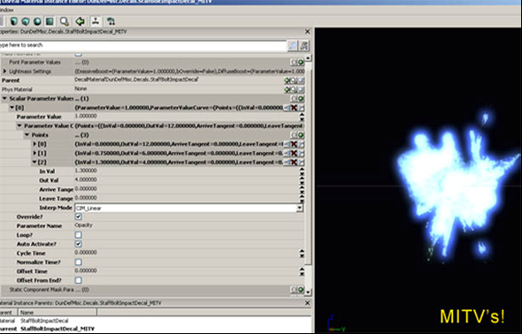
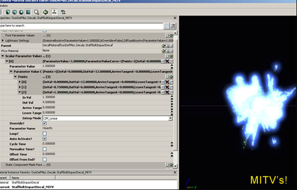

UDN
Search public documentation:
DungeonDefenseDeveloperBlog
日本語訳
中国翻译
한국어
Interested in the Unreal Engine?
Visit the Unreal Technology site.
Looking for jobs and company info?
Check out the Epic games site.
Questions about support via UDN?
Contact the UDN Staff
中国翻译
한국어
Interested in the Unreal Engine?
Visit the Unreal Technology site.
Looking for jobs and company info?
Check out the Epic games site.
Questions about support via UDN?
Contact the UDN Staff
Dungeon Defense Developer Blog
Blog 1: Day One
Hey all, These are some exciting times for indie developers. Not only has the advent of digital distribution opened up a huge market for all sorts of innovative games by small creative teams, but now we have Epic, with undeniably the most advanced game technology in the industry, opening up their platform to anyone with an urge become the next Shigeru Miyamoto (or Kim Swift)! As a long-time Unreal developer, I’ve jumped on this bandwagon, and over the coming months I’m going to be putting together a series of straightforward mini-game demos on the UDK. My goal is to provide the growing community with some open-source, open-content examples of ways to implement various types of gameplay within the UDK. These should be relatively simple chunks of code and content that may be more easily digestible by Unreal newbies than the full-course meal that is Unreal Tournament. So without further ado, let’s chow down! (mmm now I really am hungry) When thinking about what kind of game to start with, I noticed that some people seem to be wondering about creating various kinds of third-person games with Unreal, which is an easy thing to do once you know how. Also, I just came off a round of playing PixelJunk Monsters, so I’m in kind of a “Tower Defense” mood. Fighting off hordes of beasties by strategically building stuff just seems like… lots o’ fun. Therefore, the first mini-game that I’m going to tackle will be called “Dungeon Defense”, and it will be a semi-topdown (more like ¾ perspective) action/tower-defense hybrid. You’ll play as a l’il mage who, ala the “Sorcerer’s Apprentice”, has got in over his head with defending his mentor’s lair while he’s away. You’ll have to use a variety of “summoning” spells to produce magical defenses throughout the lair, and zap stuff with your magic staff when the defenses happen to get overrun. Should be a nice hybrid of action tactics and resource-management strategy, and with Unreal implementing all of this craziness is going to be a pleasant breeze. So over the weekend, I did some design work to plan out my assets and control schemes, and then today I officially started programming. First, I started with implementing my own GameInfo, Pawn/Player, Player Controller, and Camera classes. I’ll describe what they do: The GameInfo class contains the global rules of the game, and so far in my case I just overwrote its default values to spawn in my own custom PlayerPawn and PlayerController class (1). The PlayerPawn is of course the physical character in the World, and the Controller is the class in which the user’s input is transferred into gameplay action on that PlayerPawn. For the camera class, I modified the UpdateViewTarget function in order to position the camera above the Pawn, rather than looking directly out its eyes like UT, and also to dynamically offset a little in the direction that the player is looking, so that it tends to rotate towards your target direction (2). I made use of Epic’s built-in RInterpTo and VInterpTo functions to handle the Rotator and Vector interpolations respectively, which are always handy. This allowed me to lag the Camera from the player’s current location (and rotation) a little bit, giving it a smoother feeling than it if was locked down exactly on his position. In the PlayerController, I changed the PlayerMove function to only change Rotation Yaw, and no Pitch (so that the character’s orientation is restricted to the 2D plane). At first I was just using mouse delta to try to change the Yaw a little every frame as you scrolled the mouse, but it didn’t feel very natural. It was just too imprecise for the PC. We just want the character to look directly at wherever we’re pointing, right? So I wrote a unique bit of code that gets the results of a “canvas deprojection” of the current mouse position, and then raycasts that 3D vector against the world to find out where in the World the user is pointing at – then makes the character look towards that point. (3) Of course, I also transformed the input directions by the camera rotation, so that the inputs result in intuitive “camera relative” movement (remembering the ever-useful TransformVectorByRotation function, equivalent to the “vector>>rotator” operator). The Player-Pawn remained pretty much like the default Pawn, except that I did some fun Animation Tree work to blend between multiple custom full-body animations, so we don’t get any pops even if we’re trying to play several animations in sequence. (4) Working with the Anim Tree system, I was reminded of how much I enjoy the Unreal tool suite… configuring your character’s blending visually with real-time feedback sure beats having to hardcode it! But that stuff only took a couple hours, so I wasn’t ready to call it a day just yet. Next, I got to work on the Mage’s Staff weapon. I sub-classed Weapon and modified it to support “charging” the weapon when it’s held, and only firing upon release (I want the Staff to support variable charge attack) (5) – and then I sub-classed Projectile to support a variable-strength projectile as well, which procedurally scales all of the visuals accordingly. (6) I should mention that I find it extremely useful to spawn “Archetype” references rather than a direct class reference (7) -- you can specify an Archetype in the “Spawn” function, as the so-called “Actor Template”) If you spawn Archetypes for gameplay, then you can have your entire library of gameplay objects ready to be configured real-time in the Editor, rather than having to go change the “Default Properties” every time you want to tweak a value. It also makes it a lot easier to visually configure values, swap out media, and create multiple variations of the same core class that differ only in properties. I’ll get into more detail about the power of Archetypes later, but suffice it to say that it helps me loads for iteration. And, of course the “Remote Control” is another really useful tool for real-time iteration, which you can access by launching the executable with the “-wxwindows” argument. I’ll talk more about the power of the Remote Control in another post! Next, I got to work on the AI Controller for my first enemy, the Goblin. I wrote a bit of “state logic” that picks a target (based on all Actors that implement an “interface” that returns a targeting weight) (8) , then decides when to pathfind, when to navigate directly to the target, and when to stop pathfinding/moving & launch an attack (9). I’ll go into more detail about the AI script later on. I also implemented a nifty MeleeAttack state for the Goblin enemy, which uses animation notifications to enable/disable Tracing (a box sweep) each frame between his current and previous “hand socket” locations. (10) This ensures that the area that the Goblin swipes for damage actually depends on the animation and its timing, rather than any hardcoded values. I also made sure that the Goblin only damages each “traced” Actor once per unique swipe, by maintaining a list of all Actors hit during the current swipe and checking against that. (11) When all was done, this melee attack felt really good and accurate to what the animations were conveying. Then, I couldn’t resist and implemented a basic “tower turret” that attacks the enemies. I didn’t bother with an AI Controller for this simple non-moving Actor, and instead just pick targets via a Timer (and remember that you can use State logic for any Object, not just Controllers). (12) I also added a LookAt Bone Controller to this Turret’s Animation Tree, to get the top of the turret to look towards any target that it picks. (13) Once the Animation tree was setup, all that took was one line of code to tell it where to look. Yay. With the gameplay really starting to take shape, I went ahead and implemented the “Crystal Core” that the enemies will attempt to destroy as their primary objective (14). I used the ‘interface’ I created for any targetable Actor (15), to give the Core an especially high priority, so that the enemies are drawn to it with a greater intensity than the player or towers. ‘Interfaces’ allow you to have Actors of totally different classes share a common set of methods, so that they can interact or be checked in the same way. So even though my “Crystal Core” class is not directly related to by “Player Pawn” by hierarchy, they both implement the same targeting-weight function provided by the shared interface, which the enemy AI generically accesses to determine which entity is a more important target. Cool! And then finally, the project’s lead artist, Morgan Roberts, put together a test level that represents the Mage’s Lair quite nicely, and so by setting up a bit of Kismet I created some waves of enemies to repeatedly spawn-in and proceed to attack the core. (16) So there we had it, an essentially playable prototype in about a day. Well the gameplay’s already too challenging for me, so in the coming days I have some serious balancing work to do, along with of course implementing a bunch of additional mechanics and refining what’s there. Thanks to the great tools of Unreal it’s just so much fun to implement this stuff! In the next posts I’ll go into more detail about many of the subjects briefly addressed above, and also start to review bits of the code or functionality that I think you’ll find interesting or particularly useful. And once we have some visuals for you to see, we’ll get some screenies up too. Cheers, I’m looking forward to you all playing this little game soon enough. Now to get that pizza I was thinking about earlier... - JeremyBlog 1: File References
Information discussed in this blog comes from the files listed below, which are part of the Dungeon Defense source code. Line numbers separated by a comma indicate multiple individual lines within the file. Line numbers seaprated by a hyphen indicate a range of lines within the file.- Main.uc: 618, 638
- DunDefPlayerCamera.uc: 240 - 248
- DunDefPlayerController.uc: 1561 - 1652
- DunDefPawn.uc: 222
- DunDefWeapon_MagicStaff.uc: 111
- DunDefProjectile_MagicBolt.uc: 24
- DunDefInventoryManager.uc: 13
- DunDefEnemyController.uc: 222
- DunDefEnemyController.uc: 764
- DunDefGoblinController.uc: 52
- DunDefGoblinController.uc: 32
- DunDefTower_ProjectileType.uc: 99
- DunDefTower_ProjectileType.uc: 95
- DunDefCrystalCore.uc: 19
- DunDefTargetableInterface.uc: 15
- DunDef_SeqAct_BasicActorSpawner.uc: 11
Blog 2: Day Three
In days 2 and 3 of working on Dungeon Defense, I focused on improving the aiming mechanic, AI navigation, and adding in the basis for an intuitive system to place down defensive “Towers” in the world. Let me tell you a bit about each implementation! For the aiming, my initial mouse-based scheme simply had the player character’s Yaw looking at wherever you were pointing with the mouse. This was fine, except when it came to 3D aiming – the character only would turn with Yaw, because there is no practical way to intuitively determine input for Pitch from a (mostly) top-down perspective. This led to the problem of when enemies were below or above the player, well, you annoyingly couldn’t hit them. So I implemented two distinct fixes, one for the mouse-based scheme, and another for the gamepad scheme, that worked quite well. For the mouse-based scheme, I first calculated the character’s Pitch to aim at whatever point the mouse screen coordinate’s “unprojection” ray collided with.(1) A brief digression: “unprojection” means to transform from 2D screen space into 3D world space, like casting a line out from the screen, whereas “projection” is to transform from world space into screen space. Both can be achieved in Unreal via corresponding Canvas functions accessible through the Player’s HUD.(2) In any case, I then fed this Pitch value to a Bone Controller setup in the Character’s Animation Tree, so that he bends at the waist to look up or down.(3) This provided the most accuracy which felt natural for a PC game. However, I had to do something about the character tending to always look down when you are pointing near to him – in which case he’s basically aiming at his feet, because that’s actually what you’re pointing at. I decided to add a condition that if you’re pointing close to the player and there’s not much height difference different to what you’re aiming at, then just look forward.(4) This eliminated the player running around looking at his feet when you’ve got the cursor close to him. Of course, I used interpolation on the Yaw and Pitch set on the Bone Controller, so that if there is a rapid change in aim point, the character doesn’t snap harshly. Furthermore, I stored the actual aim point within my Pawn,(5) and in my weapon looks it up to explicitly aim the projectile at that point, simply by giving it setting its Rotation to Rotator(TargetPoint-ProjectileSpawnPoint), and Velocity to the Speed*Normal(TargetPoint-ProjectileSpawnPoint).(6) This resulted in pinpoint shooting that looked and felt proper for a PC game, but still kept that simple, arcadey top-down perspective I wanted. For the gamepad control scheme, I had to do something a little different. Because the player doesn’t have a fast, precise pointing device, looking at an exact location that the user is pointing at was out of the question. But we still needed some form 3D aiming! So I decided to implement an auto-aim function, which determines the best target (if any) to aim within a maximum range, and sets the aim point to that target’s location.(7) Because auto-aim still uses the aim-point system, it fit in with the existing “look at” methods that I created for the PC’s control scheme – the only difference is HOW the aim point is selected. So to pick the best auto-aim target, I started with an OverlappingActors check from the Player to gather all ‘enemy’ type Actors within the auto-aim range, and then iterate through them and see which potential target is the closest to me AND the nearest to my looking direction. The target who is closest and nearest to my look direction (which is calculated as “Normal(TargetLocation – EyeLocation) dot Vector(Rotation)”), within a degree of allowance and weighting for each, will be my ideal target. Once I tweaked up the allowance and weights, this auto-aim selection method worked well, and now with the gamepad you would get vertical auto-aiming at any you were (more or less) looking at. I also added a small bit of added Yaw rotation on the character’s Spine bone towards the target, so that the bullets didn’t appear to fly a bit sideways due to the dot-product allowance on the auto-aim.(8) The gamepad control scheme was now up to par with the mouse! On a side note, I used DebugSpheres to draw at my auto-aim target, which helped identify how well the selection method was working. In fact, I employ DebugSpheres, DebugLines, DebugBoxes all the time for analysis – I highly recommend making use of them during your prototyping phases, and even leaving the code to draw them in your class. Just toggle them off with a custom “bDebug” Boolean, so you can turn them back on later if you encounter a problem or want to do further tweaking. Visualizing what’s going on with your code pertaining to the 3D operations in the World is a great little bit of functionality for gameplay programmers. Next up, I decided to change my AI pathfinding routine from using Unreal’s longtime Waypoint-Pathnode navigation system (‘them apples’) to the new Navigation Mesh system. Holy @#$#! This was super easy to do and the results it yielded were pretty incredible to my jaded eyes. You just plunk down this Pylon Actor in your level, build paths, and it does all of the heavily lifting automatically. As soon as the (surprisingly fast) calculation is done, you’ve got a fully realized pathing network for your environment, as here: No recreating pathnode setups as the level architecture changes, essentially you just click “rebuild paths” and the Pylons you’ve placed will do the heavy lifting of recalculating all valid paths! As for the code to actually use the Mesh Navigation system, it couldn’t be simpler (and this comes from experience using other mesh-based navigation technologies). These few bits of code are essentially all it takes for an AI Controller to walk through navigation results from a Nav Mesh:
function InitNavigationHandle()
{
if( NavigationHandleClass != None && NavigationHandle == none )
NavigationHandle = new(self) class'NavigationHandle';
}
event vector GeneratePathToActor( Actor Goal, optional float WithinDistance, optional bool bAllowPartialPath )
{
local vector NextDest;
//set our return value equal to our destination Actor’s Location.
//In case it’s directly reachable or pathfinding fails, we’ll just return this.
NextDest = Goal.Location;
if ( NavigationHandle == None )
InitNavigationHandle();
//if the Actor isn’t directly reachable, then try to find the next navigation point towards it.
//Otherwise we’ll just return its location to go there directly.
if(!NavActorReachable(Goal))
{
class'NavMeshPath_Toward'.static.TowardGoal( NavigationHandle, Goal );
class'NavMeshGoal_At'.static.AtActor( NavigationHandle, Goal, WithinDistance, true );
if ( NavigationHandle.FindPath() )
NavigationHandle.GetNextMoveLocation(NextDest, 60);
}
NavigationHandle.ClearConstraints();
return NextDest;
}
//WithinRange just checks a small distance from the TargetActor,
//otherwise just keep moving whereever GeneratePath tells us to go.
while(!WithinRange(TargetActor))
{
MoveTo(GeneratePathToActor(TargetActor),none,30,false);
Sleep(0);
}
Blog 2: File References
Information discussed in this blog comes from the files listed below, which are part of the Dungeon Defense source code. Line numbers separated by a comma indicate multiple individual lines within the file. Line numbers seaprated by a hyphen indicate a range of lines within the file.- DunDefPlayerController.uc: 1575
- DunDefHUD.uc: 122
- DunDefPlayer.uc: 304, 329
- DunDefPlayerController.uc: 1611
- DunDefPlayer.uc: 304
- DunDefWeapon.uc: 134, 157
- DunDefPlayer.uc: 241
- DunDefPlayer.uc: 315
- DunDefEnemyController.uc: 938
- DunDefPlayerController.uc: 577
- DunDefTowerPlacementHandler.uc: 340
- DunDefPlayerCamera.uc: 109
- DunDefPlayerCamera.uc: 163-174
- DunDefTowerPlacementHandler.uc: 89-135
- DunDefTowerPlacementHandler.uc: 304
- DunDefTowerPlacementHandler.uc: 438, 474
- DunDefTowerPlacementHandler.uc: 468
- DunDefTowerPlacementHandler.uc: 219-238, 396-404
- DunDefTowerPlacementHandler.uc: 492-516
- DunDefTowerPlacementHandler.uc: 240-249
- DunDefTowerPlacementHandler.uc: 524-525
- DunDefPlayerController.uc: 706
- DunDefTowerPlacementHandler.uc: 691
- DunDefTowerPlacementHandler.uc: 786, 795
- DunDefTowerPlacementHandler.uc: 801
- DunDefPlayerController.uc: 602
Blog 3: Day Seven
Hey all, The Dungeon Defense team has covered so much ground since the last blog entry, it’s almost daunting to figure out where to begin writing about it! But let’s take an overview of what we’ve achieved over the last couple days since the previous post, and then I’ll go into more detail on each one of these topics:- Added rigid body “Mana Tokens” that enemies drop which are vacuum-attracted by nearby Players – these are the expendable resource of the game used to summon towers and cast other spells.
- Added a system to upgrade your “Magic Staff” weapon through a series of archetypes in an editable array of structs (a data-driven system)
- Added split-screen support and dynamic local-player joining.
- Added a custom UI class to support an Editor-driven animation system (building on top of Epic’s existing UI animation infrastructure)
- Added a bunch of functional placeholder UI scenes: a main menu, pause menu, game over UI, individual Player HUDs, shared global game info HUD, and a loading screen.
- Setup our game logic to support asynchronous loading (“Seamless Travel”), so that we can have animated transition screen while the level loads in the background.
- Added a new character animation node (a BlendBySpeed variant, with an option to specify which Physics States are considered “movement” as well as cap the speed multiplier), and upper-body blending support to our player-character Animation Tree.
- AI improvements: Made the AI’s stop pathfinding when they’ve determined they’ve got a direct line-of-sight to the target, periodically re-evaluate what their ideal target is, and put in some fail-safes to detect if the get “stuck” and attempt to move back onto the navigation system.
- Added a bunch of Kismet actions to support a full “Tower Defense gameplay cycle, among others:
So let’s take a closer look at some of the topics above, starting with those Rigid Body Mana Tokens. This is pretty simple, by inheriting from the Epic-provided KActorSpawnable class, I took advantage of their class that is already setup to apply rigid body physics to an Actor based on its StaticMesh Component (which has convex collisions set on it).(1) In my child class’ default propeties, I simply overwrote its “bWakeOnLevelStart=true” (so that it immediately drops), and set its bBlockActors to false so that the player can actually move through the object without getting stuck. I gave this ‘ManaToken’ a tiny gem-like Static Mesh (in its Archetype), and then had my “DunDefEnemy” spawn a variable number of these (from Archetype) in its Died() function.(2) I also applied a scaled VRand(), random direction vector, impulse to each dropped token, to get them to fly outwards from the enemy. I check for nearby Mana Tokens within the Player, and “collect” them if any are found (namely, destroy it and add its ‘mana’ value to our Player Controller’s total).(3) Finally, in order to avoid the necessity of actually touching each token to collect it, I added a periodic OverlappingActors test in the Player (not in every token!) to find all nearby tokens, and flag them to apply a Force towards the player to suck them in. I also added a slight inverse force when their velocity is not in the direction of the player, which basically applies an “anisotropic friction” to help get them towards the player faster.(4) All in all, it resulted in a satisfying vacuum effected as the tokens started flying around.
- A cool latent (meaning “over time”) ‘Wave Spawner’ action that will spawn enemies-over-time from an arbritrary array of structs representing groups of enemies, with appropriate output links for when the player has killed a particular wave.
- An action to dynamically scale the number of enemies and intervals between waves, so that the game can get procedurally more difficult over time.
- Various actions to open UI’s while passing in custom info.
- An event to detect a “lose condition” (core destruction) shortly before the Core actually dies, so that I can trigger a cutscene early in this case.
 Now to support upgrading weapons during gameplay, I extended my “Summoning Tower” state in my PlayerController (which basically locked input and had the player character play a summoning animation).(5) I called this child state “UpgradingWeapon”, and simply had it play a different animation and visual effect by overriding a couple corresponding functions.(6) In this way, I was able to make use of all of the functionality of my original State while implementing just the new functionality I was interested in. State hierarchies are a super useful concept for gameplay programming, and one which from a language-standpoint are pretty unique to UnrealScript! So I had my player entering a state to play a unique animation once I pressed the “Upgrade” button, but now I needed to actually do something with the weapon.
I added an array of structs called “Weapon Upgrade Entries”, which contained information about each upgrade level: the mana cost, a description, the time the upgrade takes, and most importantly the actual Weapon Archetype Reference for the weapon which will be spawned and given to the player once the upgrade is complete.(7) Why did I use a struct (which soley contains values) and not class? Well, structs can be created dynamically within the Editor’s property editor, and thus I could setup my ‘Weapon Upgrade Entries’ values within the Editor, and keep the whole system data driven.
Next I added an “enum” to contain an entry corresponding to each supported Upgrade level (up to 5), and then simply picked the next enum value (current enum +1) each time the player upgrades, and use that as an index to get the next “Weapon Upgrade Entry” in the struct array. Within my PlayerController then I simply wait in the “Upgrading Weapon” state (playing the looping upgrade animation) for as long as the upgrade struct entry says so, and then once that time is expired I spawn the archetype for the new weapon (and, heh, destroy the old one).(8) It all worked well, and the fact that all of the values are contained in the PlayerController Archetype’s “Weapon Upgrade Entries” struct array means that iteration to fine-tune the associated weapon-upgrade costs and times can be done in the Editor, in real-time via the Remote Control. Now that’s efficiency for ya!
I also wanted to support split-screen, because since the game is starting to get really fun by one’s self, it should be 4x as fun with Four Players! (or something like that ;)
Supporting split-screen multiplayer is really simple, again thanks to the powerful framework that Epic has provided. I just needed to handle the “press start” input for any controller which doesn’t yet have a player associated with it , and then call “CreatePlayer” function with that new controller ID. I handled the “Press Start” input for gamepads that don’t have players in a subclass of Input, in its InputKey funtion. When the player presses Start on the gamepad, this key name is passed to the InputKey function, and there I call CreatePlayer with the corresponding ControllerID.(9) I added this new Input class to the “Interaction” list of my ViewPortClient class using the InsertInteraction() function, and that was it.(10) Player #2 pressed Start, and in popped a second PlayerController and associated Player-Pawn – and the viewports automatically split accordingly (if you don’t want split-screen, you can override the UpdateActiveSplitscreenType()(11) function in your ViewportClient class – in which case the first player’s camera perspective is going to be what’s drawn). Now what was once a singleplayer experience can now dynamically be enjoyed by multiple local players! Online multiplayer takes more doing using the Actor Replication system – though not much more thanks to the existing framework Epic has provided – we’ll cover that in subsequent installments.
Next, I wanted to tackle some basic functional User Interfaces for the game, so that it could start to function as a fully playable system, all the way from main menu to completed victory, and not just a single level. I took a look at the UI animation system, which was quite powerful but could only be edited through DefaultProperties. So making use of the power of UnrealScript, I wrapped the values of these UI animation classes into structs and made them editable within my extended UIScene class.(12) Upon activation of my custom UIScene, I copy these struct values into the dynamically-created UI Animation objects.(13) Thus I got the advantages of being able to edit and experiment with animation values in the Editor, while still using the existing UI animation system that Epic created.
With this new functionality in place, I created a bunch of sime placeholder UI’s. Some of these, such as the Player HUD UI(14) (opened by my HUD class), are meant to be drawn in each player’s viewport, while others are global, full-screen and not owned by any one player. I wrote some functions into my GameInfo class to display these Global UI’s directly based on the persistent game’s state (such as how much time is left in the build phase, how many enemies are left in the combat phase, etc).(15) I created some decent little (placeholder) Open and Close animations for the UI’s (tweaked from within the Editor).
Once I was satisfied, I decided that I wanted my loading UI to be animated(16), so that we have a nice jaunty transition from the main menu (which is actually a level that opens the main menu UI) to the gameplay level: a ‘never a dull moment’ kind of desire. This is possible using Epic’s SeamlessTravel functionality, which loads a level in the background while using another level as a temporary “transition” map. In my case, the transition map is what opens my Loading Screen UI scene – and that displays until the transition map is closed, when the destination level has been fully loadedin the background. All you have to do is call WorldInfo.SeamlessTravel(17), and the Transition Map specified in your INI will be entered, while the final destination level is loaded in the background. Simple and powerful.
Of course, you also have the capability to do what is called “level streaming”, which means streaming in parts of a level dynamically while gameplay is ongoing (such as the interior of a building when you enter the first room), or unloading old outdated parts (such as the exterior world when you enter an interior building). Particularly useful for large-World games, that’s a different process, handled through Kismet and the World Editor itself, and thoroughly documented by Epic here: Level Streaming Guide
Next, I noticed that my characters movement animation rates really could benefit from being dynamically adjusted with their movement speeds. Epic already has an Animation Tree node for this, called BlendBySpeed, but I wanted to add a bit of functionality to it: I wanted mine to only scale for speed when the player was in specific physics states (namely, on the ground walking) and to have a maximum cap on the rate scale – so that if the player happened to move really quickly for some reason (such as by getting a large momentum from an explosion) the movement animations didn’t look wacky as a result. Thankfully this was simple, I just inherited my new animation node class from Epic’s own “AnimNodeScalePlayRate” , and then added a Tick function to it, and in the Tick function check the current speed of its Owner Skeletal Mesh’s Actor (doing the clamping and phyiscs check that I was interested in).(18) I created a TickableAnimNode interface to support this new Tick function(19), and registered the node with my Pawn class in its OnBecomeRelevant() function (and de-register in OnCeaseRelevant()) so that the Pawn knows to Tick the node. Extending the Engine’s base classes with your own, and adding new functionality to them with UnrealScript, gets you the most power out of the framework, something that is also clear when you start adding Kismet functionality. Which is what I did next!
(I also added a CustomAnimation node that is filtered to only play on the character’s upper body, using the ‘AnimNodeBlendPerBone’ as its parent, set to filter from the ‘Spine’ bone upward. So my character can play reactive animations while still moving his legs independently.)(20)
So with local multiplayer, the functional UI’s, the basic resource and weapon upgrading system all taken care of, I wanted to put it all together with a playable “tower defense” game cycle, start-to-finish. This would require a bit of level scripting to do nicely (I could hard-code it, but that would be so lame and not extendable to more gametypes and levels!). Therefore, I was looking at using Kismet to drive my “Build and Combat” cycle, which is in essence: give the player some time to build (notify him of this time via the UI), then spawn waves of enemies (notifying him how many via the UI), and then repeat the cycle while procedurally scaling the number/intervals of enemies and time-to-build so that the game gets more and more difficult – until it becomes essentially overwhelming. Yay ?:)
To begin with, I wanted to use a latent Kismet action to spawn waves of enemies, which is an action that doesn’t complete/output immediately, but updates internally over time and only completes when some internal logic says so. I created my own “Enemy Wave Spawner” action (extending SeqAct_Latent to get the ‘ Update()’ function(21)), which has an array of structs, each struct defining a wave of enemies that will appear at a certain time after the action has begun.(22) Only when all of these waves of enemies have been killed will the “Wave Spawner” Kismet action complete and activate its final output.(23)
Here’s where things got particularly interesting. While I could have just made the ‘Wave Entries’ struct array be editable directly within the Action’s properties, I knew that I wanted to pass around these ‘Wave Entries’ between multiple spawners, procedurally scale their values, and have them be processed as information by the UI (“how many enemies to kill”)(24). So I decided to make a new Kismet Variable class, SeqVar_EnemyWaveEntries, which simply contains the struct within itself(25). THIS Kismet Variable object is what is taken as Variable Input into the Wave Spawner Kismet Action, which then copies the struct for its own use.(26)
Using a Kismet Variable object to wrap the Wave Entries struct, rather than just a direct editable value within the Wave Spawner action, I was able to pass the Wave Entries around Kismet visually. This enabled me to link the ‘Wave Entry’” Variables in Kismet to another action I wrote, ‘ScaleEnemyWave’. ‘ScaleEnemyWave’ takes a Wave entry and a float as input, for how many enemies and interval time to scale the Wave by.(27) By altering these float scales with a ‘Multiply Float’ Kismet action after combat cycle, I was able to make the game become procedurally more difficult per round. I plan on doing even more with this system soon, such as allowing the waves to have random archetype values (so you’re never quite sure what group of enemies you’ll face), and using a RandomFloat variable for the scales so that the quantity and pace of enemies spawned always varies slightly.
The bottom line is, thanks to Kismet the level can be balanced with Play-In-Editor iteration, and we can construct more unique sequences, such as adding additional events in between milestone wave numbers (say, every 5 waves you get to fight a Super Enemy – especially simple because our gameplay objects are Archetypes). It’s going to be a very fun designer-driven experience to tweak up the Build-Combat-Wave cycles through Kismet in the coming days. Until next time… keep on creating!
Now to support upgrading weapons during gameplay, I extended my “Summoning Tower” state in my PlayerController (which basically locked input and had the player character play a summoning animation).(5) I called this child state “UpgradingWeapon”, and simply had it play a different animation and visual effect by overriding a couple corresponding functions.(6) In this way, I was able to make use of all of the functionality of my original State while implementing just the new functionality I was interested in. State hierarchies are a super useful concept for gameplay programming, and one which from a language-standpoint are pretty unique to UnrealScript! So I had my player entering a state to play a unique animation once I pressed the “Upgrade” button, but now I needed to actually do something with the weapon.
I added an array of structs called “Weapon Upgrade Entries”, which contained information about each upgrade level: the mana cost, a description, the time the upgrade takes, and most importantly the actual Weapon Archetype Reference for the weapon which will be spawned and given to the player once the upgrade is complete.(7) Why did I use a struct (which soley contains values) and not class? Well, structs can be created dynamically within the Editor’s property editor, and thus I could setup my ‘Weapon Upgrade Entries’ values within the Editor, and keep the whole system data driven.
Next I added an “enum” to contain an entry corresponding to each supported Upgrade level (up to 5), and then simply picked the next enum value (current enum +1) each time the player upgrades, and use that as an index to get the next “Weapon Upgrade Entry” in the struct array. Within my PlayerController then I simply wait in the “Upgrading Weapon” state (playing the looping upgrade animation) for as long as the upgrade struct entry says so, and then once that time is expired I spawn the archetype for the new weapon (and, heh, destroy the old one).(8) It all worked well, and the fact that all of the values are contained in the PlayerController Archetype’s “Weapon Upgrade Entries” struct array means that iteration to fine-tune the associated weapon-upgrade costs and times can be done in the Editor, in real-time via the Remote Control. Now that’s efficiency for ya!
I also wanted to support split-screen, because since the game is starting to get really fun by one’s self, it should be 4x as fun with Four Players! (or something like that ;)
Supporting split-screen multiplayer is really simple, again thanks to the powerful framework that Epic has provided. I just needed to handle the “press start” input for any controller which doesn’t yet have a player associated with it , and then call “CreatePlayer” function with that new controller ID. I handled the “Press Start” input for gamepads that don’t have players in a subclass of Input, in its InputKey funtion. When the player presses Start on the gamepad, this key name is passed to the InputKey function, and there I call CreatePlayer with the corresponding ControllerID.(9) I added this new Input class to the “Interaction” list of my ViewPortClient class using the InsertInteraction() function, and that was it.(10) Player #2 pressed Start, and in popped a second PlayerController and associated Player-Pawn – and the viewports automatically split accordingly (if you don’t want split-screen, you can override the UpdateActiveSplitscreenType()(11) function in your ViewportClient class – in which case the first player’s camera perspective is going to be what’s drawn). Now what was once a singleplayer experience can now dynamically be enjoyed by multiple local players! Online multiplayer takes more doing using the Actor Replication system – though not much more thanks to the existing framework Epic has provided – we’ll cover that in subsequent installments.
Next, I wanted to tackle some basic functional User Interfaces for the game, so that it could start to function as a fully playable system, all the way from main menu to completed victory, and not just a single level. I took a look at the UI animation system, which was quite powerful but could only be edited through DefaultProperties. So making use of the power of UnrealScript, I wrapped the values of these UI animation classes into structs and made them editable within my extended UIScene class.(12) Upon activation of my custom UIScene, I copy these struct values into the dynamically-created UI Animation objects.(13) Thus I got the advantages of being able to edit and experiment with animation values in the Editor, while still using the existing UI animation system that Epic created.
With this new functionality in place, I created a bunch of sime placeholder UI’s. Some of these, such as the Player HUD UI(14) (opened by my HUD class), are meant to be drawn in each player’s viewport, while others are global, full-screen and not owned by any one player. I wrote some functions into my GameInfo class to display these Global UI’s directly based on the persistent game’s state (such as how much time is left in the build phase, how many enemies are left in the combat phase, etc).(15) I created some decent little (placeholder) Open and Close animations for the UI’s (tweaked from within the Editor).
Once I was satisfied, I decided that I wanted my loading UI to be animated(16), so that we have a nice jaunty transition from the main menu (which is actually a level that opens the main menu UI) to the gameplay level: a ‘never a dull moment’ kind of desire. This is possible using Epic’s SeamlessTravel functionality, which loads a level in the background while using another level as a temporary “transition” map. In my case, the transition map is what opens my Loading Screen UI scene – and that displays until the transition map is closed, when the destination level has been fully loadedin the background. All you have to do is call WorldInfo.SeamlessTravel(17), and the Transition Map specified in your INI will be entered, while the final destination level is loaded in the background. Simple and powerful.
Of course, you also have the capability to do what is called “level streaming”, which means streaming in parts of a level dynamically while gameplay is ongoing (such as the interior of a building when you enter the first room), or unloading old outdated parts (such as the exterior world when you enter an interior building). Particularly useful for large-World games, that’s a different process, handled through Kismet and the World Editor itself, and thoroughly documented by Epic here: Level Streaming Guide
Next, I noticed that my characters movement animation rates really could benefit from being dynamically adjusted with their movement speeds. Epic already has an Animation Tree node for this, called BlendBySpeed, but I wanted to add a bit of functionality to it: I wanted mine to only scale for speed when the player was in specific physics states (namely, on the ground walking) and to have a maximum cap on the rate scale – so that if the player happened to move really quickly for some reason (such as by getting a large momentum from an explosion) the movement animations didn’t look wacky as a result. Thankfully this was simple, I just inherited my new animation node class from Epic’s own “AnimNodeScalePlayRate” , and then added a Tick function to it, and in the Tick function check the current speed of its Owner Skeletal Mesh’s Actor (doing the clamping and phyiscs check that I was interested in).(18) I created a TickableAnimNode interface to support this new Tick function(19), and registered the node with my Pawn class in its OnBecomeRelevant() function (and de-register in OnCeaseRelevant()) so that the Pawn knows to Tick the node. Extending the Engine’s base classes with your own, and adding new functionality to them with UnrealScript, gets you the most power out of the framework, something that is also clear when you start adding Kismet functionality. Which is what I did next!
(I also added a CustomAnimation node that is filtered to only play on the character’s upper body, using the ‘AnimNodeBlendPerBone’ as its parent, set to filter from the ‘Spine’ bone upward. So my character can play reactive animations while still moving his legs independently.)(20)
So with local multiplayer, the functional UI’s, the basic resource and weapon upgrading system all taken care of, I wanted to put it all together with a playable “tower defense” game cycle, start-to-finish. This would require a bit of level scripting to do nicely (I could hard-code it, but that would be so lame and not extendable to more gametypes and levels!). Therefore, I was looking at using Kismet to drive my “Build and Combat” cycle, which is in essence: give the player some time to build (notify him of this time via the UI), then spawn waves of enemies (notifying him how many via the UI), and then repeat the cycle while procedurally scaling the number/intervals of enemies and time-to-build so that the game gets more and more difficult – until it becomes essentially overwhelming. Yay ?:)
To begin with, I wanted to use a latent Kismet action to spawn waves of enemies, which is an action that doesn’t complete/output immediately, but updates internally over time and only completes when some internal logic says so. I created my own “Enemy Wave Spawner” action (extending SeqAct_Latent to get the ‘ Update()’ function(21)), which has an array of structs, each struct defining a wave of enemies that will appear at a certain time after the action has begun.(22) Only when all of these waves of enemies have been killed will the “Wave Spawner” Kismet action complete and activate its final output.(23)
Here’s where things got particularly interesting. While I could have just made the ‘Wave Entries’ struct array be editable directly within the Action’s properties, I knew that I wanted to pass around these ‘Wave Entries’ between multiple spawners, procedurally scale their values, and have them be processed as information by the UI (“how many enemies to kill”)(24). So I decided to make a new Kismet Variable class, SeqVar_EnemyWaveEntries, which simply contains the struct within itself(25). THIS Kismet Variable object is what is taken as Variable Input into the Wave Spawner Kismet Action, which then copies the struct for its own use.(26)
Using a Kismet Variable object to wrap the Wave Entries struct, rather than just a direct editable value within the Wave Spawner action, I was able to pass the Wave Entries around Kismet visually. This enabled me to link the ‘Wave Entry’” Variables in Kismet to another action I wrote, ‘ScaleEnemyWave’. ‘ScaleEnemyWave’ takes a Wave entry and a float as input, for how many enemies and interval time to scale the Wave by.(27) By altering these float scales with a ‘Multiply Float’ Kismet action after combat cycle, I was able to make the game become procedurally more difficult per round. I plan on doing even more with this system soon, such as allowing the waves to have random archetype values (so you’re never quite sure what group of enemies you’ll face), and using a RandomFloat variable for the scales so that the quantity and pace of enemies spawned always varies slightly.
The bottom line is, thanks to Kismet the level can be balanced with Play-In-Editor iteration, and we can construct more unique sequences, such as adding additional events in between milestone wave numbers (say, every 5 waves you get to fight a Super Enemy – especially simple because our gameplay objects are Archetypes). It’s going to be a very fun designer-driven experience to tweak up the Build-Combat-Wave cycles through Kismet in the coming days. Until next time… keep on creating!
Blog 3: File References
Information discussed in this blog comes from the files listed below, which are part of the Dungeon Defense source code. Line numbers separated by a comma indicate multiple individual lines within the file. Line numbers seaprated by a hyphen indicate a range of lines within the file.- DunDefManaToken.uc: 8
- DunDefEnemy.uc: 208
- DunDefPlayer.uc: 351
- DunDefManaToken.uc: 62
- DunDefPlayerController.uc: 812
- DunDefPlayerController.uc: 1266
- DunDefPlayerController.uc: 69
- DunDefPlayerController.uc: 1316-1320, 1280
- DunDefViewportInput.uc: 15
- DunDefViewportClient.uc: 474
- DunDefViewportClient.uc: 226
- DunDefUIScene.uc: 11
- DunDefUIScne.uc: 36
- DunDefHUD.uc: 27
- Main.uc: 223, 333, 482, 132
- Main.uc: 482
- Main.uc: 488
- DunDef_AnimNodeScaleRateBySpeed.uc: 17
- DunDefPawn.uc: 285
- DunDefPlayer.uc: 163
- DunDef_SeqAct_EnemyWaveSpawner.uc: 162
- DunDef_SeqAct_EnemyWaveSpawner.uc: 14
- DunDef_SeqAct_EnemyWaveSpawner.uc: 198, 231
- DunDef_SeqAct_OpenKillCountUI.uc: 31
- DunDef_SeqVar_EnemyWaveEntries.uc: 10
- DunDef_SeqAct_EnemyWaveSpawner.uc: 176
- DunDef_SeqAct_ScaleEnemyWave.uc: 53
Blog 4: Day Ten
Hello again my intrepid Unreal acolytes! In the last past several days since the previous blog, our little team has made a ton of progress even through the holidays. Let me give you an overview, and then we’ll dive into some detail about each topic:- We have the first artwork (skeletal meshes) for our cool character designs! Yay for cheeky fantasy clichés! Now we just need to rig them for animation, and then we’ll be replacing the UT robots of doom -- which should sharpen the game’s own sense of style. In addition to further work on the environment, we also got our base “Mage Staff” weapon model, which works well even with the temporary visual effects.
- I couldn’t help myself, and implemented some nifty Render Target usage on the main menu. Namely, the main menu now displays an animated image of each “player character” for 1-4 players (which will eventually be a color-swapped version of the main character), to indicate who is “signed in” to the game. You can press “Start” on any connected gamepad while in this menu and that player will become signed in for the subsequent gameplay, and this is reflected in an ‘active’ animation that these “render to texture” characters play in response (they are greyed-out ‘idle’ when unselected). Neat!
- Further playing around with the main menu, I created a little Canvas particle system to emit particles from the cursor’s location. This system can be used for other UI effects as well down the line.
- I got my hands dirty with matinee and implemented gameplay-intro and game-over cinematics, setting up the appropriate input-blocking states on the Player Controllers so that they can’t move/shoot while in cinematic. I also implemented a custom solution for cinematic skipping when a player presses Start/Escape.
- I did a bunch of Player HUD work, like implementing the whole thing, including: a Material-based Health/Progress Bar (custom UI Control), state-reactive Spell Icons, animated Mana Token indicator, etc. I also implemented HUD overlays (dynamic Canvas draws) for floating health bars above the Towers/Core, as well as a rotating waypoint that points towards the Core when it is under attack. These all play correctly in 2-4 splitscreen, woot.
- Implemented impact decals for our weapon, including making use of Epic’s very-powerful “Material Instance Time Varying” (mouthful) system.
- Implemented the basic functionality for a ranged-attack enemy to serve as our “Archer” unit. State inheritance made this a breeze, though I also made some AI tweaks to get exactly the behavior I wanted (including aim-prediction, deliberate inaccuracy, and something I like to call projectile direction “fudge-factor”).
 With this done, I couldn’t resist sprucing up the main menu a little bit more with some magic particles emitting from the cursor (which I’m going to replace with a custom texture soon…). For this, I overrode the PostRender() function in my game’s ViewPortClient class, and I check my game’s MapInfo to see if the Current World is flagged as a “menu” level. If it is a menu level, I then use Canvas.DrawMaterialTile to manually draw “particles” defined by an array of particle structs(6). Each struct contains info about a particle – its location, size, velocity, acceleration, and lifespan(7). I update the particles in the ViewPortClient’s Tick() function, incrementing their Position with their Velocity, applying their Acceleration, decreasing their lifespan, and resetting them when they expire.(8)
Later I’m planning on extending the Canvas Particle System framework later to support predefined “defaultproperty” animation values, so that I can have UI particles that respond to input events, etc, to make clicking through the menus that much more satisfying. I like how Epic’s framework is flexible enough to support custom solutions to things like this – not only does UE3 have such powerful tools, but when I want to “roll my own” and create my own little particle system method, I can use the flexibility of UnrealScript to do so!
Moving back into gameplay, I wanted to make the beginning of the level more exciting, and provide the player with an overview of the environment he was tasked with defending. Matinee would be the obvious tool for creating such cinematics, and thanks to the framework this was really simple to get going. Unreal’s Player Controller class will by default apply the view of any Matinee that contains a “Director” track (considered to be a ‘cinematic’ matinee, as opposed to just some scripted gameplay sequence).
However, you do have to block input correctly to prevent the player from walking around during the cinematic (and maybe you also want to hide his character if it’s not pertinent to the sequence). This is as simple as overriding the “NotifyDirectorControl” event in your PlayerController, which has a parameter indicating whether the player is entering or leaving the cinematic sequence – if he’s entering director control, I push a state called “InCinematic” to the player controller which ignores most input functions (and can optionally hide the Controller’s Pawn Actor), and he’s leaving the director control, I pop that state. And there we go, no more moving around during “cutscene”. (9)
However, I also wanted the player to be able to skip the cinematic (‘games with unskippable cutscenes’ – the bane of gamers everywhere!). To achieve this, I overrode the “StartFire” exec function (and an input function that corresponds to pressing Escape in my game). Instead of shooting the weapon (which would be pointless during a cinematic of course), I iterated through all SeqAct_Interp (matinees) in the level’s kismet, found the one whose Director track was currently controlling our Player Controller, and then set that Matinee’s PlayRate to 10000 which causes it to end in a single frame (restoring the PlayRate to the original value afterwards).(10) Thus instantly ended ?:)
With my game now using some nice cinematics, it was time to focus on the task of improving the player’s HUD – namely, moving it from some DrawText calls in my HUD class’ PostRender, to an actual UI Scene that would employ animated graphics in response to gameplay events. The first thing I wanted on my new uber-HUD was a good progress-bar style graphic for indicating Health percent and spell-casting time. I decided to roll my own, using a Material that I cooked up which masks a progress-layer corresponding to a “Percent” scalar parameter (that is, you tell the Material Instance what percent you want, and it only shows “that much” of the progress-bar image within an overall frame). Because this was a Material, I could use it both in a UI Control within a UI Scene (for the Player HUD)(11), AND for dynamic Canvas overlays using DrawMaterialTile(12) (for floating health indicators on top of my tower actors). Sweetness.
The only thing to be careful about is that when you use a Material Instance Constant for such a purpose, you must create a UNIQUE Material Instance Constant for each bar you want to draw (with the original MIC as each one’s “Parent”). Otherwise, when you set an MIC Parameter like my “Percent” value, it would affect each of the bars (because they’d all be sharing the same MIC). So in my case I simply had each UI HealthBar instance(13) (or Actor which implemented the “Damageable” interface(14)) initialize its own “new” MaterialInstanceConstant, and set the original MIC as its Parent. Thus I got a health/progress bar system flexible enough to be used in UI Scenes and in floating HUDs, as well as support nifty Material animation so that it looks “magical” (i.e. it has multiple scrolling blended layers, haha).
Next I wanted Spell Icons that updated a their visual state corresponding to what the player was currently doing – indicating states such as whether the spell could be afforded, was currently applicable, was in the process of being casted, or could be cast. I also wanted these spell icons to dynamically display the input-button corresponding to cast that spell. For this I inherited my “Spell Icon” from UI Image, and I added a couple parameters to it so that it could contain a reference to two extra UI Labels, one for displaying how much “mana” the spell would cost, and another for displaying the text-button (or gamepad button image-icon) to press to use that spell.
The “Spell Icon” control would update upon every Player State change, query the Player Controller for its corresponding spell’s usability(15), and based on the result would update its visuals (color/opacity) to indicate each unique state, as well as the values within the corresponding labels when necessary(16). Two things made this easy: (1) That a UI Control can contain a reference to other UI Controls within the Scene(17) and (2) that a UI Control knows about its Parent UI Scene, and the Parent UI Scene knows about its Player Owner. Therefore, the results could be specific to the player which owns the UI HUD, without needing to add any extra references to get at this information.
I also found that all graphics aligned nicely in split-screen when I used the “Percentage Owner” positioning calculation, along with “Scale Height” Aspect Ratio size adjustment option for images that needed to retain their original aspect ratio (such as button icons!). This split-screen verification was made really easy by the ability to toggle between all split-screen UI view modes directly within the UI editor – powerful as heck. Finally, I made further use of the “UI Animation” system that I exposed to the Editor a few days ago, and created animation sequences for each of these controls to react to state changes – so they bounce around to reflect changes in state (such as when they become disabled or re-enabled), and the color changes occur over time, rather than being instantaneous. This added a nice subtle sense of feedback, and I enjoyed the process as it was entirely data-driven iteration within the UI Editor/PIE.
Finally, I wanted the player to know when the “Lair Core” was under attack (defending it is your primary objective!), and correspondingly display a floating HUD waypoint indicator to point towards the Core. For this I implemented my “HUD Overlay” interface on the Crystal Core (my Player HUD, in its PostRender, iterates through All Dynamic Actors which implement this interface, and calls a DrawOverlay function on them). In its newly-implemented DrawOverlay function, the Crystal Core checks if it was attacked recently. If so, the Core’s DrawOverlay calls DrawRotatedMaterialTile() with a waypoint icon, and the Rotation is calculcated as the direction (from the canvas center) towards the projected screen-position of the Core. And for the position passed to “Rotated Material Tile”, I calculated an offset from the center of the screen in the direction of that Rotation -- thus the waypoint moves in a circle around the center, similar to a compass.(18) Since I used a Material (rather than just a Texture), I was able to animate the Waypoint Icon, in the Material, to bounce around and flash, so that it draws attention!
Next I wanted to add some more “Oomf” to the impact of the Magic Staff’s projectiles. I already had a nice particle emitter (with light component) spawning at the impact point, so what more could I add? Decals baby, decals! And not just any ol’ static decals either – no I wanted to make use of Epic’s uber-powerful and uber-named “Material Instance Time Varying “ system so that these decals would artistically animate.
Spawning a decal upon the Projectile Impact was simple: in my projectile “Explode” function, I simply called WorldInfo.MyDecalManager.SpawnDecal(), passing in the HitLocation and negative-HitNormal that my projectile collided with, and corresponding values about decal size and lifespan. Of course, into SpawnDecal(), I also pass in a “Material Interface” from my Projectile Archetype – this generic reference can be either a static “Decal Material” or a dynamic “MITV”. In the case that it’s a MITV (which I checking using GenericMaterialReference.IsA(‘MaterialInstanceTimeVarying’), I create a “new” MaterialInstanceTimeVarying from it. This is necessary so that it can animate uniquely for each decal that I spawn. I set the MITV’s duration to the “GetMaxDurationFromAllParameters()” (so that it lasts as long as its Material animation tells it to), pass it to the SpawnDecal() function, and boom animated decals! (19)

MITV’s allow for easy artist-driven fading decals (just add some keyframes to interpolate an ‘Opacity’ parameter from 1 to 0 over some seconds), but they can be used for so much more: e.g. bullet holes that glow red hot before fading to black, or non-decal usage such as pulsating materials on a complex loop, or even materials that animate dynamically in response to gameplay events. Once I set up the simple code to spawn them on a decal in response to projectile impact, the system can be driven by artists to do pretty much whatever they can image. I’m looking forward for Dungeon Defense’s VFX artist to have some fun with this in the days ahead.
Finally, I got back to implemented more core gameplay content, in this case adding a ranged-attack enemy to complement my melee dudes. The “Ranged” enemy pawn itself was nearly an empty class inheriting from by base enemy pawn, but its AI Controller had a bit of unique functionality. In addition to having a large “attack range” from which its stops to shoot projectiles (of course), I extended the generic “Attacking” state from my base Enemy AI Controller to, in this case, spawn a Ranged projectile at the correct time during an attack (specifically upon an animation event passed up from the Pawn when playing the shoot animation).(20) I liked the fact that my generic Attacking state handles the more abstract logic, such as popping the state if the enemy takes damage while attacking, setting the “Last Attacked Time” value for interval checking, while the specific “RangedAttacking” state does the specific act of firing the projectile (whereas my Melee enemy’s “MeleeAttacking” state, mentioned in a previous blog post, does a melee trace).
State inheritance, which I also used extensively for the player’s spell-casting system, allows you to put more general functionality in abstract states, and then implement child versions of these states that are more specific to individual cases. As I’ve mentioned before, this is such a powerful system that is almost entirely exclusive to UnrealScript’s language design, and can really boost productivity and enhance code design. In any case, for actually spawning the projectile, I did a bit of fun math that predicts where the enemy should aim his shot considering the player’s current velocity(21) (OK I believe Epic’s own SuggestTossVelocity function does this as well, but I wanted to brush up on my Kinematics 101 myself!).
However, I didn’t want this enemy’s aim to be perfect -- that’d be no fun – so I added a tiny bit of deliberate error to the shoot angle (transformed the shoot target position by a small random rotator).(22) Finally, I clamped the projectile shoot direction to a 15-degree angle limit around the Pawn’s current Rotation, so that there wouldn’t be any cheap shots where the enemy shoots projectiles sideways at you.(23) I allowed those 15 degrees of freedom, however, as my “projectile fudge factor” to allow the enemies to not have to be perfectly oriented towards you, in order to still pose a threat with decent aim. It works well and “shhhh” no one will notice. :)
So folks, that about sums up the past couple days. We’re making rapid (ok – insanely rapid) game development progress on the back of the powerful Unreal tech, and soon we’re going to have a nice demo for y’all. We’ll keep you posted, and ‘till next time… keep on developing!
With this done, I couldn’t resist sprucing up the main menu a little bit more with some magic particles emitting from the cursor (which I’m going to replace with a custom texture soon…). For this, I overrode the PostRender() function in my game’s ViewPortClient class, and I check my game’s MapInfo to see if the Current World is flagged as a “menu” level. If it is a menu level, I then use Canvas.DrawMaterialTile to manually draw “particles” defined by an array of particle structs(6). Each struct contains info about a particle – its location, size, velocity, acceleration, and lifespan(7). I update the particles in the ViewPortClient’s Tick() function, incrementing their Position with their Velocity, applying their Acceleration, decreasing their lifespan, and resetting them when they expire.(8)
Later I’m planning on extending the Canvas Particle System framework later to support predefined “defaultproperty” animation values, so that I can have UI particles that respond to input events, etc, to make clicking through the menus that much more satisfying. I like how Epic’s framework is flexible enough to support custom solutions to things like this – not only does UE3 have such powerful tools, but when I want to “roll my own” and create my own little particle system method, I can use the flexibility of UnrealScript to do so!
Moving back into gameplay, I wanted to make the beginning of the level more exciting, and provide the player with an overview of the environment he was tasked with defending. Matinee would be the obvious tool for creating such cinematics, and thanks to the framework this was really simple to get going. Unreal’s Player Controller class will by default apply the view of any Matinee that contains a “Director” track (considered to be a ‘cinematic’ matinee, as opposed to just some scripted gameplay sequence).
However, you do have to block input correctly to prevent the player from walking around during the cinematic (and maybe you also want to hide his character if it’s not pertinent to the sequence). This is as simple as overriding the “NotifyDirectorControl” event in your PlayerController, which has a parameter indicating whether the player is entering or leaving the cinematic sequence – if he’s entering director control, I push a state called “InCinematic” to the player controller which ignores most input functions (and can optionally hide the Controller’s Pawn Actor), and he’s leaving the director control, I pop that state. And there we go, no more moving around during “cutscene”. (9)
However, I also wanted the player to be able to skip the cinematic (‘games with unskippable cutscenes’ – the bane of gamers everywhere!). To achieve this, I overrode the “StartFire” exec function (and an input function that corresponds to pressing Escape in my game). Instead of shooting the weapon (which would be pointless during a cinematic of course), I iterated through all SeqAct_Interp (matinees) in the level’s kismet, found the one whose Director track was currently controlling our Player Controller, and then set that Matinee’s PlayRate to 10000 which causes it to end in a single frame (restoring the PlayRate to the original value afterwards).(10) Thus instantly ended ?:)
With my game now using some nice cinematics, it was time to focus on the task of improving the player’s HUD – namely, moving it from some DrawText calls in my HUD class’ PostRender, to an actual UI Scene that would employ animated graphics in response to gameplay events. The first thing I wanted on my new uber-HUD was a good progress-bar style graphic for indicating Health percent and spell-casting time. I decided to roll my own, using a Material that I cooked up which masks a progress-layer corresponding to a “Percent” scalar parameter (that is, you tell the Material Instance what percent you want, and it only shows “that much” of the progress-bar image within an overall frame). Because this was a Material, I could use it both in a UI Control within a UI Scene (for the Player HUD)(11), AND for dynamic Canvas overlays using DrawMaterialTile(12) (for floating health indicators on top of my tower actors). Sweetness.
The only thing to be careful about is that when you use a Material Instance Constant for such a purpose, you must create a UNIQUE Material Instance Constant for each bar you want to draw (with the original MIC as each one’s “Parent”). Otherwise, when you set an MIC Parameter like my “Percent” value, it would affect each of the bars (because they’d all be sharing the same MIC). So in my case I simply had each UI HealthBar instance(13) (or Actor which implemented the “Damageable” interface(14)) initialize its own “new” MaterialInstanceConstant, and set the original MIC as its Parent. Thus I got a health/progress bar system flexible enough to be used in UI Scenes and in floating HUDs, as well as support nifty Material animation so that it looks “magical” (i.e. it has multiple scrolling blended layers, haha).
Next I wanted Spell Icons that updated a their visual state corresponding to what the player was currently doing – indicating states such as whether the spell could be afforded, was currently applicable, was in the process of being casted, or could be cast. I also wanted these spell icons to dynamically display the input-button corresponding to cast that spell. For this I inherited my “Spell Icon” from UI Image, and I added a couple parameters to it so that it could contain a reference to two extra UI Labels, one for displaying how much “mana” the spell would cost, and another for displaying the text-button (or gamepad button image-icon) to press to use that spell.
The “Spell Icon” control would update upon every Player State change, query the Player Controller for its corresponding spell’s usability(15), and based on the result would update its visuals (color/opacity) to indicate each unique state, as well as the values within the corresponding labels when necessary(16). Two things made this easy: (1) That a UI Control can contain a reference to other UI Controls within the Scene(17) and (2) that a UI Control knows about its Parent UI Scene, and the Parent UI Scene knows about its Player Owner. Therefore, the results could be specific to the player which owns the UI HUD, without needing to add any extra references to get at this information.
I also found that all graphics aligned nicely in split-screen when I used the “Percentage Owner” positioning calculation, along with “Scale Height” Aspect Ratio size adjustment option for images that needed to retain their original aspect ratio (such as button icons!). This split-screen verification was made really easy by the ability to toggle between all split-screen UI view modes directly within the UI editor – powerful as heck. Finally, I made further use of the “UI Animation” system that I exposed to the Editor a few days ago, and created animation sequences for each of these controls to react to state changes – so they bounce around to reflect changes in state (such as when they become disabled or re-enabled), and the color changes occur over time, rather than being instantaneous. This added a nice subtle sense of feedback, and I enjoyed the process as it was entirely data-driven iteration within the UI Editor/PIE.
Finally, I wanted the player to know when the “Lair Core” was under attack (defending it is your primary objective!), and correspondingly display a floating HUD waypoint indicator to point towards the Core. For this I implemented my “HUD Overlay” interface on the Crystal Core (my Player HUD, in its PostRender, iterates through All Dynamic Actors which implement this interface, and calls a DrawOverlay function on them). In its newly-implemented DrawOverlay function, the Crystal Core checks if it was attacked recently. If so, the Core’s DrawOverlay calls DrawRotatedMaterialTile() with a waypoint icon, and the Rotation is calculcated as the direction (from the canvas center) towards the projected screen-position of the Core. And for the position passed to “Rotated Material Tile”, I calculated an offset from the center of the screen in the direction of that Rotation -- thus the waypoint moves in a circle around the center, similar to a compass.(18) Since I used a Material (rather than just a Texture), I was able to animate the Waypoint Icon, in the Material, to bounce around and flash, so that it draws attention!
Next I wanted to add some more “Oomf” to the impact of the Magic Staff’s projectiles. I already had a nice particle emitter (with light component) spawning at the impact point, so what more could I add? Decals baby, decals! And not just any ol’ static decals either – no I wanted to make use of Epic’s uber-powerful and uber-named “Material Instance Time Varying “ system so that these decals would artistically animate.
Spawning a decal upon the Projectile Impact was simple: in my projectile “Explode” function, I simply called WorldInfo.MyDecalManager.SpawnDecal(), passing in the HitLocation and negative-HitNormal that my projectile collided with, and corresponding values about decal size and lifespan. Of course, into SpawnDecal(), I also pass in a “Material Interface” from my Projectile Archetype – this generic reference can be either a static “Decal Material” or a dynamic “MITV”. In the case that it’s a MITV (which I checking using GenericMaterialReference.IsA(‘MaterialInstanceTimeVarying’), I create a “new” MaterialInstanceTimeVarying from it. This is necessary so that it can animate uniquely for each decal that I spawn. I set the MITV’s duration to the “GetMaxDurationFromAllParameters()” (so that it lasts as long as its Material animation tells it to), pass it to the SpawnDecal() function, and boom animated decals! (19)

MITV’s allow for easy artist-driven fading decals (just add some keyframes to interpolate an ‘Opacity’ parameter from 1 to 0 over some seconds), but they can be used for so much more: e.g. bullet holes that glow red hot before fading to black, or non-decal usage such as pulsating materials on a complex loop, or even materials that animate dynamically in response to gameplay events. Once I set up the simple code to spawn them on a decal in response to projectile impact, the system can be driven by artists to do pretty much whatever they can image. I’m looking forward for Dungeon Defense’s VFX artist to have some fun with this in the days ahead.
Finally, I got back to implemented more core gameplay content, in this case adding a ranged-attack enemy to complement my melee dudes. The “Ranged” enemy pawn itself was nearly an empty class inheriting from by base enemy pawn, but its AI Controller had a bit of unique functionality. In addition to having a large “attack range” from which its stops to shoot projectiles (of course), I extended the generic “Attacking” state from my base Enemy AI Controller to, in this case, spawn a Ranged projectile at the correct time during an attack (specifically upon an animation event passed up from the Pawn when playing the shoot animation).(20) I liked the fact that my generic Attacking state handles the more abstract logic, such as popping the state if the enemy takes damage while attacking, setting the “Last Attacked Time” value for interval checking, while the specific “RangedAttacking” state does the specific act of firing the projectile (whereas my Melee enemy’s “MeleeAttacking” state, mentioned in a previous blog post, does a melee trace).
State inheritance, which I also used extensively for the player’s spell-casting system, allows you to put more general functionality in abstract states, and then implement child versions of these states that are more specific to individual cases. As I’ve mentioned before, this is such a powerful system that is almost entirely exclusive to UnrealScript’s language design, and can really boost productivity and enhance code design. In any case, for actually spawning the projectile, I did a bit of fun math that predicts where the enemy should aim his shot considering the player’s current velocity(21) (OK I believe Epic’s own SuggestTossVelocity function does this as well, but I wanted to brush up on my Kinematics 101 myself!).
However, I didn’t want this enemy’s aim to be perfect -- that’d be no fun – so I added a tiny bit of deliberate error to the shoot angle (transformed the shoot target position by a small random rotator).(22) Finally, I clamped the projectile shoot direction to a 15-degree angle limit around the Pawn’s current Rotation, so that there wouldn’t be any cheap shots where the enemy shoots projectiles sideways at you.(23) I allowed those 15 degrees of freedom, however, as my “projectile fudge factor” to allow the enemies to not have to be perfectly oriented towards you, in order to still pose a threat with decent aim. It works well and “shhhh” no one will notice. :)
So folks, that about sums up the past couple days. We’re making rapid (ok – insanely rapid) game development progress on the back of the powerful Unreal tech, and soon we’re going to have a nice demo for y’all. We’ll keep you posted, and ‘till next time… keep on developing!
Blog 4: File References
Information discussed in this blog comes from the files listed below, which are part of the Dungeon Defense source code. Line numbers separated by a comma indicate multiple individual lines within the file. Line numbers seaprated by a hyphen indicate a range of lines within the file.- DunDefPlayerSelectUICharacter.uc: 24
- UIImage_PlayerSelect.uc: 38, 48
- UI_CharacterSelect.uc: 97
- UI_CharacterSelect.uc: 65
- UIImage_PlayerSelect.uc: 38, 48
- DunDefViewportClient.uc: 108
- DunDefViewportClient.uc: 14
- DunDefViewportClient.uc: 122
- DunDefPlayerController.uc: 1713, 1726
- DunDefPlayerController.uc: 1832, 1809
- UIImage_HealthBar.uc: 55
- DunDefDamageableTarget.uc: 137
- UIImage_HealthBar.uc: 16
- DunDefDamageableTarget.uc: 154
- UIImage_SpellIcon.uc: 81
- UIImage_SpellIcon.uc: 90
- UIImage_SpellIcon.uc: 11-14
- DunDefCrystalCore.uc: 41-69
- DunDefProjectile.uc: 78-103
- DunDefDarkElfController.uc: 85-107, DunDefDarkElf.uc: 56
- DunDefDarkElfController.uc: 31, 71
- DunDefDarkElfController.uc: 62, 63, 71
- DunDefDarkElfController.uc: 74
Blog 5: Day Thirteen
Hey everyone, It’s been a busy couple days of development! We got our 2-week milestone build prepared, cooked it with the Frontend tool, and Packaged it for release to our army of ace testers (ok, our friends and family ?:)). With the mechanics firmly in place, we could finally sit back and enjoy the gameplay, while taking some notes for difficulty tuning. It’s looking good and a pretty fun little mini-game, and what’s most exciting for me is that you’ll get to play it yourself in a couple weeks! On the implementation side of things, here’s an overview of the major areas of progression, most related to getting that ‘milestone’ ready:- Added some more Kismet functionality: a latent action to toggle arbritrary postprocess effects with parameter interpolation (so you can get a smooth fade-in/out of an effect any time you want). I also added an action to scale any Kismet float variable by the number of players in the game (with an array of multipliers for the number of players) – this was important for multiplayer difficulty balancing, to ensure that there are more enemies and less time between waves when more players are present, but not necessarily on a fixed linear scale.
- I added a new Tower type: the “Blockade”, which acts as a barricade that enemies are prone to either destroy or navigate around (using some rudimentary dynamic pathfinding). I also created an Attacker Registration system so that any targetable object can specify how many enemies are allowed to attack it at once (the rest will move on and look for other targets of opportunity). Thus when enemies encounter a Blockade, a few of them will attack it to bring it down, while the rest will proceed to navigate around it!
- Added a game-optional Friendly Fire check, which UT already had, but since I’m not using the UT classes I wrote my own. Also added some additional logic to the player-start location choosing, so that the game will cycle through all valid start locations for each newly-joining player, so that 4 instantly-joining players are guaranteed to get their unique start spots.
- I modified the UI Skin to add in my own ‘awesome’ buttons and fonts, and I added music and SFX to all of the game sequences and menus. For the SFX, I added an AudioComponent to my standard Effect Actor, so that all of my Visual Effects which are spawned instantly supported audio (and given that they were all archetypes already, this made adding audio to most of the game’s events a breeze – and the remaining few sound effects were generally tied to Animations via the Anim Sequence Browser).
- I cooked and packaged the thing, baked like a cake.
- If a PostProcessEffect is already on a FadeUp or FadeDown array when attempting to add a FadeUp/Down for that effect, then it needs to be removed from the old array before being added anew. Otherwise we’d have two interpolations proceeding at the same time, which would mess things up. This is a case which can occur if rapidly triggering FadeUp/FadeDown inputs on the kismet (say when dancing around the edge of a trigger volume that is linked to the action via Touched/Untouched). (7)
- For proper split-screen support, the Action does support taking an Instigator and only altering its PlayerController.LocalPlayer’s effects (as an option, it can also alter everyone’s). However, Material Effects need unique MIC’s in order for them to have unique parameter values, and this is not currently possible to specify directly within the Postprocess Chain Editor itself. Therefore, I wrote a function to check if the Material Effect’s Material is unique (this is achieved by checking that current Material on the Effect is either not an MIC, or an MIC whose Parent is not an MIC – either case means, for me, that it has not been made unique yet). If it is not unique, I make a new MIC for it, set its Parent to the original Material, and apply that new MIC to the Material Effect.(8) Thus we get proper split-screen unique PostProcess alteration. Phew!
Blog 5: File References
Information discussed in this blog comes from the files listed below, which are part of the Dungeon Defense source code. Line numbers separated by a comma indicate multiple individual lines within the file. Line numbers seaprated by a hyphen indicate a range of lines within the file.- DunDef_SeqAct_ScaleFloatForPlayerCount.uc: 10
- DunDef_SeqAct_ScaleFloatForPlayerCount.uc: 22-26
- DunDef_SeqAct_TogglePostProcessEffects: 70-79
- DunDef_SeqAct_TogglePostProcessEffects: 240
- DunDef_SeqAct_TogglePostProcessEffects: 171-233
- DunDef_SeqAct_TogglePostProcessEffects: 236, 248
- DunDef_SeqAct_TogglePostProcessEffects: 139-155
- DunDef_SeqAct_TogglePostProcessEffects: 137, 117
- DunDefTower_Blockade.uc: 21
- DunDefEnemyController.uc: 456-460
- DunDefEnemyController.uc: 492-509
- DunDefEnemyController.uc: 522-530
- DunDefEnemyController.uc: 536
- DunDefEnemyController.uc: 563
- DunDefEnemyController.uc: 538, 545
- DunDefEnemyController.uc: 549
- DunDefEnemyController.uc: 656
- DunDefEnemyController.uc: 648, 602
- DunDefTargetableInterface.uc: 26, 29
- DunDefDamageableTarget.uc: 65, 73
- DunDefDamageableTarget.uc: 61, 93
- DunDefEnemyController.uc: 259, 272
- DunDefEnemyController.uc: 217, 283
- DunDefTargetableInterface.uc: 21, DunDefPawn.uc: 67
- DunDefPawn.uc: 148
- Main.uc: 274, 286
- DunDefEmitterSpawnable.uc: 154
- DunDef_UIAction_PlaySound.uc: 13
- Main.uc: 156
Blog 6: Day Seventeen
Hello once again, fellow UDK developers! As we’re entering the final stage of Dungeon Defense’s development, for the past couple days I’ve focused on adding some polish to the AI behaviors, and then turned my attention towards a couple of the meta-game systems that will provide replay value. Additionally, I integrated a bunch of the artwork that was recently completed; one of the most exciting parts of the development process is when you get to see your gameplay spring to life with great art, and so nicely rendered by Unreal tech. Anyhow, let me give you an overview of what was done on the code side of things, and then I’ll go into more detail about each topic:- I improved the enemy AI by adding periodic “stuck” checks in case the enemy is knocked off the navigation network (i.e. from momentum imparted by damage) or can’t reach its target for some reason. In which cases, it will attempt to find a new target while dynamically getting back onto the navigation path. I also added an “Aggro” system (familiar to MMO users) whereby enemies will become more aggressive towards targets that have caused them damage, based on how recently and how much damage, while also weighting in all other targeting factors. This makes the enemies more lifelike, while also providing additional tactical depth (i.e. you may be able to lure a powerful enemy away from an important defensive point by distracting it with damage).
- I added a basic Global UI Notification system, so that mission objectives and other game information can be conveyed on a full-screen UI even during a split-screen game. Multiple notifications can be stacked and will gradually fade off-screen over time.
- I added a “Score” system whereby players earn points for killing enemies, completing waves, etc – each score addition can have an “Award Name” attached to it, which pops up a little text saying why you earned that Score (for bonuses, and special point awards).
- I also tied the Scoring system together with a new High-Score system, which saves the top-ten scores and displays them on the main menu and game-over screens. When you earn one of the top-ten scores during a game, you are prompted to enter your name for your High Score entry upon ending the game. This works for multiple players too!
- I added a basic options UI, which saves options, and also allows you to change them during gameplay.
- Did much gameplay tweaking and balancing, various fine-grained bits of polish that will hopefully make it more enjoyable for you all ?:)
 So with this bit of AI and UI work completed for some polish and replayability, we’re nearing the final phase of development. I plan to implement more content before release, including a nifty trap that the player can trigger to slow down enemies, but altogether it’s nearly finished. I can’t wait for you all to play this little game, and I’ll continue to keep you posted over the next couple days as we wrap it up!
So with this bit of AI and UI work completed for some polish and replayability, we’re nearing the final phase of development. I plan to implement more content before release, including a nifty trap that the player can trigger to slow down enemies, but altogether it’s nearly finished. I can’t wait for you all to play this little game, and I’ll continue to keep you posted over the next couple days as we wrap it up!
Blog 6: File References
Information discussed in this blog comes from the files listed below, which are part of the Dungeon Defense source code. Line numbers separated by a comma indicate multiple individual lines within the file. Line numbers seaprated by a hyphen indicate a range of lines within the file.- DunDefEnemyController.uc: 972
- DunDefEnemyController.uc: 715
- DunDefEnemyController.uc: 915
- DunDefEnemyController.uc: 11
- DunDefEnemyController.uc: 109
- DunDefEnemyController.uc: 201, 167
- UI_GlobalHUD.uc: 11
- UI_GlobalHUD.uc: 27
- DunDef_SeqAct_ShowNotification.uc: 41
- Main.uc: 233
- UI_PlayerHUD.uc: 51
- DunDef_SeqAct_ShowNotification.uc: 36
- DunDefPlayerController.uc: 309
- Main.uc: 345
- UILabel_ScoreIndicator.uc: 53, 112
- UILabel_ScoreIndicator.uc: 59, 115
- UILabel_ScoreIndicator.uc: 103
- UILabel_ScoreIndicator.uc: 32
- UILabel_ScoreIndicator.uc: 65, 103
- Data_HighScores.uc: 11-19
- Data_HighScores.uc: 35-64
- UI_GameOver.uc: 75, Main.uc: 186-209
- UI_AddingHighScore.uc: 18-30, Data_HighScores.uc: 35-64
- UIPanel_HighScores.uc: 16-30
- UI_Options.uc: 31-43
- UI_Options.uc: 164-165, 55
Blog 7: Day Twenty-Three
Hello everyone! It’s been a super busy half-week since the last blog entry, and so much has been accomplished! We’re in the process of wrapping up our little game-demo, applying final spit & polish to everything that you’re soon going to see for yourself. Consequently, a lot of the changes have been oriented towards balancing and content integration; it’s always a thrill to see so many aspects spring to life with great media. Of course, I’ve also made a ton of functionality additions, so let me review the major ones with you:- Through Kismet, I changed the lava pits, which were previously just a Physics Volume that applied a ton of damage, to instead teleport the player back to safety while applying a small amount of damage – while outright KILLING enemies. This required the addition of a new Kismet condition to test the class type of whatever Touched the trigger volume.
- Added nice camera tracing, with interpolation, so that the camera won’t go through walls, and changed the camera rotation method (in the mouse control scheme) to simply involve moving the mouse to the edge of the screen. Also scaled the camera FoV dynamically with the viewport aspect ratio, to ensure that players can see just far when using widescreen resolutions / horizontal splitscreen.
- Added a floating particle-effect underneath the mouse cursor that indicates where you’re going to shoot, and changed its color via a Particle Color Parameter to turn red when over an enemy. Only the owner Player sees this Particle Effect in his view, using the ‘bOnlyOwnerSee’ Actor/Component option.
- Added a “gas trap”, which causes enemies to Cough until the gas dissipates – a handy technique to slow them down while the towers wreak havoc.
- Added the ability to sell towers inheriting the states from the tower-placement system. Of course, you only get back a percentage of what you spent on them and their current health – ‘depreciation’ ala Economics 101.
- Made each subsequent joining player get a unique character Material colorization, so you can easily tell each other apart.
- Added a bunch of options to the main menu: gamma, sfx, and music volume sliders, and resolution selector, and fullscreen/postprocessing toggle.
- Totally changed the look of the game, haha! I basically amped up the cartoon aesthetic by employing a geometry-outlining postprocessing material and contrast adjustment. Gives Dungeon Defense a distinct feel that expresses the playful vibe I’m aiming to convey.
- Resolution Selection & Fullscreen Toggle: For this, I used an array of Checkboxes containing string data for my supported resolutions (“1024x768”, “1280x720”, etc). I set the ButtonClicked delegate on these checkboxes to see if any of the other resolution boxes were checked, and uncheck them if so (so that only one resolution can be selected at a time). I also prevented the regular “unchecking” behavior of the checkbox by setting its value to true upon each click, so you can only enable them, never disable.(16) The fullscreen toggle was just a checkbox with default on/off behavior. Finally, when the player clicks “OK”, I call the “SetRes [resolution][fullscreen]” console command with the currently selected resolution checkboxes string value, and the fullscreen value. The “SetRes” console command takes care of the actual resolution changing, including storing the latest values in the user’s INI.(17)
- Postprocess Toggle: I also added a checkbox for toggling postprocessing, the value of which I simply store in a config Boolean in my ViewportClient class (since it appears there’s no global postprocessing config value anymore). In my ViewportClient init function, if the post-processing Boolean is false, I execute the Console Command “show postprocess” to toggle postprcessing off.(18) I do this every time the post-processing Boolean is toggled via the options menu as well, and call SaveConfig() on my ViewportClient class to store my postprocessing bool in the user’s INI.(19)
- Gamma Slider: I added a Slider to my options menu, set its min and max values to reasonable gamma values, and execute the console command “Gamma [SliderValue]” every frame while in the options menu (because I didn’t feel like adding a script callback for it, ha).(20) I also store the current gamma value as a config variable in my ViewportClient class, since it doesn’t save otherwise, and also set this value as the active Gamma in my ViewportClient initialization (using the console command).(21)
- Music & SFX Slider: For this, I needed to specify ‘SoundClasses’ on all of my game’s SoundCues, and set a ‘SoundMode’ on the AudioDevice control the Volume of those respective SoundClasses. I added Epic’s SoundModesAndClasses.upk to my game’s startup packages (so I could use all of their built-in soundclasses), and edited the SoundCue class’ default properties to have the default SoundClass be “SFX”. I specifically set my music cues to be of the “Music” SoundClass in the Editor, and set the ‘Default’ SoundMode on the AudioDevice in my ViewportClient’s initialization. In the Editor, I added two Effects to my ‘Default’ SoundMode’s Effects array, one for the ‘SFX’ soundclass and one for ‘Music’, so that I could individually control their volume levels. I then wrote a Set Volume function to alter the ‘VolumeAdjuster’ values of the Current SoundMode’s Effects array (with the indices corresponding to the “SFX” and “Music” soundclasses I set up).(22) Finally, I added SFX-Volume and Music-Volume config floats to my ViewportClient class, and in the Options menu I set them to the respective UI Slider’s values.(23) While in the Options menu, I call my SetVolume function to have the slider-driven values continually update into the AudioDevice.(24) And presto, real-time adjustable individual audio settings for SFX and Music!
Blog 7: File References
Information discussed in this blog comes from the files listed below, which are part of the Dungeon Defense source code. Line numbers separated by a comma indicate multiple individual lines within the file. Line numbers seaprated by a hyphen indicate a range of lines within the file.- DunDef_SeqCond_IsOfClass.uc: 14
- DunDefPlayerCamera.uc: 243
- DunDefPlayerCamera.uc: 278
- DunDefPlayerCamera.uc: 288, 295
- DunDefPlayerCamera.uc: 286
- DunDefPlayerCamera.uc: 145, 205
- DunDefPlayerCamera.uc: 354
- DunDefPlayerController.uc: 1550-1557, DunDefHUD.uc: 56, 62
- DunDefPlayer.uc: 494-504
- DunDefPlayerController.uc: 226
- DunDefPlayerController.uc: 1586
- DunDefPlayerController.uc: 1594-1596, 1606-1609
- DunDefPlayer.uc: 88
- DunDefPlayerController.uc: 270
- DunDefPlayerController.uc: 224, DunDefPlayer.uc: 114
- UI_OptionsMenu.uc: 140-152
- UI_OptionsMenu.uc: 71
- DunDefViewportClient.uc: 297
- UI_OptionsMenu.uc: 68, DunDefViewportClient.uc: 359
- UI_OptionsMenu.uc: 94
- DunDefViewportClient.uc: 299, 354
- DunDefViewportClient.uc: 318
- DunDefViewportClient.uc: 51-52, UI_OptionsMenu.uc: 39-40
- UI_OptionsMenu.uc: 95
Blog 8: Day Twenty-Six
Hello everyone and welcome to my last blog entry! (for now) It has been an intense four weeks of game development, but also a totally wonderful experience. I’ll let the pictures do the explaining. We went from this at the end of Week 1: To this at the end of Week 4: As expected, Unreal performed beautifully throughout the process , and with its capabilities we were able to achieve so much in such a short timeframe. I hope you all are enjoying the Dungeon Defense demo as you read this (well, not at the same exact moment… unless you’re a really talented multi-tasker!). The team and I are eager to find out what you think of our little game, and to answer any questions you may have about how we put it together. So please join me on the UDK forums and I’ll be there to shed some light on anything that comes to mind. In the meantime, to cap off this blog series, I’d like to take the opportunity to discuss some of my overall approaches to game and prototype development with Unreal. These are my own particular opinions, and may not be applicable to every circumstance or universally agreed upon, but I hope they may be some of use with your own creative endeavors. Let’s call these “Jeremy’s Eight Crazy Rules of Unreal Game Dev Goodness“ (just in time for Hanukkah):1. Nail Your Core Mechanics Early and Iterate, Iterate, Iterate One thing I’ve learned over numerous projects is there’s no point in building the house before you’ve laid down solid foundations. In other words, get your gameplay mechanics to be fun and enjoyably working before you go full-bore into artistic production and level development. Such a statement might seem like a no-brainer, but in practice it’s often so exciting to jump right into the thick of full content development that you can end up forgetting to build those foundations first. You’ll save yourself a lot of headaches if you not only know exactly what game you’re creating before you start to produce costly assets (i.e. at least a design treatment), but also have said game very much playable by that point (this does not necessarily mean bug-free or visually compelling). Furthermore, the earlier you get your gameplay mechanics in place, the more time you’ll have to iterate, which means to refine by repeated passes. Iteration can take place throughout much of your development cycle, but the more of it you can squeeze into your pre-production/conceptual prototyping phase, the better. Of course as I’ve mentioned before, Unreal has some great tools to support rapid iteration. They include the Remote Control (for changing values in real-time), Archetypes (for having values be essentially data-driven rather than hardcoded), and Play In Editor (for playing within a level that you’re actively modifying in the same application instance). Make use of each and every one of them, indeed simultaneously (i.e. you can have Remote Control open in PIE), and you’ll be iterating faster than you can spell it three times fast. Your gameplay will thank you. 2. Use Placeholder Assets to Prototype Your Gameplay Ever have a 3D artist model a character, a tech artist rig it, and an animator create a bunch of animations only to find out that none of the media was appropriate for what your gameplay actually needed? No? Then lucky you. I’ve made that mistake before, and needless to say: artists do not like it. And why should they? Programmers and designers need to make sure that before the final artwork is put into the production pipeline, they know exactly how the art is supposed to be constructed for gameplay purposes, and have clearly communicated that to the pertinent artists. I’ve found that the best way to do this is to use PLACEHOLDER assets – simple generalized versions of say, a humanoid character or a weapon, that can be used to represent the final asset. Ideally, the placeholder asset will have roughly the same dimensions, shape, and (in the case of a skeletal mesh) bone structure as the final asset, but depending on the complexity of the mechanic that may not be necessary. Not only does using placeholder assets, critically, allow you to ‘Nail Your Core Mechanics Early’ (see Rule #1), but it also allows your artists to see the intended behavior functioning in the game before they go off to make the final media; placeholder implementations can be the most effective communication method possible. Furthermore, the artists themselves can usually swap out the placeholder assets for final ones directly, meaning THEY can iterate on the visuals within the context of the actual gameplay, rather than only in an abstract space. Thankfully, Unreal makes it easy to swap out temporary assets with final ones: just change a few references (Mesh, AnimSet, etc) in an Archetype or in DefaultProperties (don’t ever reference directly in code lines!), and you’re good to go. Thus Endeth Commandment #2. 3. Follow The Unreal Way There are usually many, many ways to achieve gameplay results with Unreal, but often far fewer ideal ways. These ‘Unreal Ways’ usually involve making full usage of the functionality that the UnrealScript interface provides you, capabilities that extend well beyond a basic programming language like C++ or Java. As random examples… [*]Want to have something delay or occur over time? Use latent state functionality (like Sleep or MoveTo) or Timers. Don’t do a bunch of Time-based if statements in a Tick! [*]Want to find out about certain Actors around your Player? Don’t do an AllActors and individually check distance from every Actor in the World, use OverlappingActors and give it your radius. [*]Want to have setup armor attachments all over your player character? Don’t create an Actor for each one – dynamically create and attach new Mesh Components (or even a custom Component class) to your Pawn! [*]Want to make a bunch of Materials that vary only by one texture? Don’t create unique base Materials for each one – use Material Instance Constants that share a Parent Material and just swap out a Diffuse Texture Parameter. [*]And, offhand, don’t… don’t… don’t… assume that structs are passed around by reference. By default, they’re always deep-copied, unless you use the “out” keyword in your function parameter. Deep-copying structs needlessly can be slow, memory hogging, AND potentially bug-creating if your logic assumes struct variables are non-unique references. Epic has devoted a whole UDN topic to explaining this. ?:) UnrealScript and the Engine framework is built in a particular way to make game implementation a much more robust experience from working in straight C++ (like many, I’ve been there, done that). As you develop with Unreal, you’ll find more inherent functionality than you could have ever expected. If you’re struggling to implement something with Unreal, then you might simply not know about some handy functionality that already exists within the engine – when in doubt, that’s usually the case. Read Epic’s code, look at their samples, stock up on interesting UDN articles, perhaps even look at Dungeon Defense (not that it’s perfect ;), and you’ll identify usage patterns that point the way towards making full use of the super-powered framework at your fingertips. Which leads us right to… 4. Search Epic's Codebase! The UnrealScript Engine-framework codebase is quite large. It’s also very well documented, but it can be daunting at times to figure out where to start; “reading” it from beginning to end is not particularly advisable unless you’ve got a constant supply of Red Bull hooked up to an I.V. (Though I would at least recommend familiarizing yourself with Actor.uc & Object.uc to begin with). Ultimately, your best friend to turn a scary large codebase into a responsive encyclopedia of knowledge? “Find All in Files”, a search capability of a Code IDE like Visual Studio (which has a free version, Visual Studio Express) , or other text editing programs. By searching for keywords like, say, “Cursor”, “Force” (or whatever you’re generally looking for) within all or some of Epic’s code files, you’ll usually get a pretty good idea of the pertinent functionality Epic’s already provided to handle all sorts of common game needs. A good rule of thumb: before you decide to “roll your own”, search Epic’s codebase to check if they’ve already “rolled it” for you! You may be surprised just how often they’ve already done what you’re looking for… then again, if you’ve played Gears of War, maybe you won’t be surprised. 5. Use nFringe. Period. Ok, I gotta hand it to the guys at PixelMine: nFringe freaking rocks. Its ‘Intellisense’ and code parsing is usually spot-on, and its syntax checking is also a huge help in reducing stupid ass bugs (as opposed to just stupid bugs). Using nFringe will boost your coding productivity massively (or at least has in my case), and it will also help you explore Epic’s codebase (and your own) much quicker. Through the Intellisense and member lists, you’ll be hopping around classes with ease and quickly examining their variables, functions, and states. I can’t emphasize this enough: if you are new to programming with Unreal, nFringe will help you get a leg up much faster. There’s just one problem at the moment: Unreal has a powerful debugger, but nFringe is locked from accessing it unless you purchase a commercial nFringe license from PixelMine, which is currently only available to pro developers. C’mon PixelMine, make your ungodly awesome tool fully available to the masses and they’ll worship you as (unholy) deities! Or something like that. But yeah, download nFringe now (+ Visual Studio Express if you don’t have it), and start coding like you’ve never coded before! 6. Employ All The Debugging Methods At Your Disposal With or without nFringe, there are still lots of ways to debug your gameplay with the Unreal framework, and you should make use of all the various techniques to achieve maximum results. Among the methods I favor are: [*]Debug Draws (Spheres, Lines, Boxes, etc): these help you visualize what’s occurring in 3D space, useful if you need to see the results of a calculated 3D transformation or just to get an idea of size, etc. [*]Log statements: Ahhh logs: Spammy but so informative. Especially when the nFringe debugger doesn’t work! Ok, with logs you can immediately print pretty much any data type to the output window (which you can summon with the console command showlog), and concatenate multiple strings using the “@” symbol so that you get maximum information onto a single line. Just be careful not to put them in your Tick functions and leave them there – spamming the log can slow down your game. In fact, it’s best to have logs only active if your Actor class has the “bDebug” toggle set, which is an editable variable that you can switch at runtime should the need arise. [*]Unlit Mode, Wireframe Mode: In cases where you’re working on something graphical but the level lighting is screwed up, just press F2 to change to unlit mode. Or if you need to see through walls (cheater!), press F1 for wireframe mode. This can be surprisingly helpful to see what enemies AI are doing when they can’t see you (voyeur!). [*]The “Show Collision” console command will visualize all collision in the world, which is good in case you seem to be facing a collision related problem. Can’t get through that hallway? Maybe it’s not a game bug, maybe your level designer put a big ol’ invisible blocker mesh down in front of the entry way, and hid it… just to spite you. ‘Show Collision’ will reveal all! (more practically, it’s super helpful to see what the collision sizes of your Pawns are) [*]Use the Time Dilation setting on the Remote Control to literally slow down time in the game (not in real life… that’d be awesome but Unreal just isn’t that powerful yet). This can be super useful to see exactly what’s going on with visual effects and animation in microscopic gameplay detail to detect any strangeness. Helpful for resolving timing-related issues. [*]The Remote Control can also display all Dynamic Actors that have been spawned during gameplay if you click the “Clock” icon on the Actor List. This is useful to double-check that Actors aren’t staying alive which should be destroyed (i.e. are your projectiles hanging around after they’ve collided? etc). [*]All Kismet actions have an “Output Comment To Screen” option, which when enabled will print their comment to the in-game console display. This can be useful to get an idea of what actions are being triggered, and when. Or, for the pro Kismet guru, use the Console Command Kismet Action (to “say”), combined with my Concatenate String Action to print-out any Kismet variables that you want :) By using these debugging approaches among many others, & one day (we hope) an nFringe debugger that everyone can enjoy, you will become a wide-eyed bug-squashing fiend. Which is a good thing. 7. Be Clever With Kismet, But... Kismet, how do we love thee? You give level designers the ability to implement gameplay, and you give game designers the ability to prototype rapidly. You giveth… and you taketh. Kismet is a fantastic, unrivalled tool for level interactions, and even for prototyping certain level-oriented gameplay mechanics. However, it has its limitations: it’s not particularly object-oriented/inheritable, it’s not as fast as UnrealScript, and it doesn’t have all of the debugging capability of UnrealScript. Therefore, trying to do everything through Kismet is not a viable approach to construct the final version of most games. By all means if you wish, prototype your gameplay with Kismet where possible (it certainly can do a lot), but bear in mind that you will likely have to rewrite much of it for your ultimate product. If you find yourself struggling to do something through Kismet, then in my view you should consider doing it through UnrealScript (or, consider writing new Kismet actions to extend its capability further). My general rule is: if it’s something that occurs in the persistent design of a level, do it through Kismet. If it’s something that has to be dynamically spawned and relates to a dynamic object’s behavior, rather than the level itself, it’s better done through UnrealScript. This outlook comes from a lot of experience with Kismet, which I love dearly and have pushed to the ends of the earth and back. Don’t get me wrong: you could theoretically write an entire game using dynamically-spawned Prefabs, but past a certain point, my opinion is that it’ll get in your way. But don’t worry dear readers, my love affair with Kismet will never end: For Dungeon Defense, I drive the entire high-level gameplay logic through it. 8. It's All About The Fun Look guys & gals, we’re indie developers (except for you Cliffy B, if you’re reading this, you’re a big fancy celeb now!). That means, by and large, we’re focused on the Fun and not the, how to put it, multi-million-dollar budgets. Of course, that may be a goal for many of us (you know who you are), and more power to you – Unreal will provide the capability to take you there. But never lose sight of the fact that when you’re out to prove to the world how brilliant your game is, and why it’s worth everyone’s time, it doesn’t matter how pretty your graphics are (though they help), or how many hours of playtime you’ve got (oh Oblivion, eater of man-months), or how many polygons your main character has in her mammaries. What matters is whether the player is engaging in an interactive experience that gives them good feedback and rewards them in satisfying ways. Ironically enough, sometimes the designer in the trenches is not always the best day-by-day judge of this. So get your friends, family, co-workers, and pet dog to play your game at key junctures, so that they can tell/bark you their feedback on how it’s handling. It won’t always be pretty, and even constructive criticism can sometimes be a tough pill to swallow, but you and your game will be better for it. Unreal is indeed the most powerful game creation technology in the world, but how you use it – whether you make a well-balanced, fun game or another… hmm… Monster Madness – that’s all up to you!Take care everyone, and keep developing your dreams into realities :) -Jeremy Stieglitz